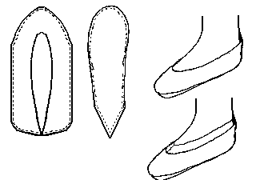
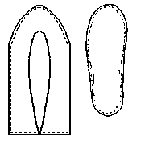

based on a Hungate find shown in Hald, it is more commonly found with the heal riser. It is generally similar to the Lottorf Bog Slipper.Although it appears that there should be a binding cord held in place by a Edge/flesh binding-stitch across the upper edge, this stitch more commonly sets a narrow band of leather in place. It may also serve to set a wider band in place, slightly raising the top level of the shoe.
The turned sole usually appear to have been attached by a grain/flesh stitch on the upper, and a flesh/flesh tunnel-stitch on the sole, changing to edge/flesh stitch at the heel riser. Plain edge/flesh stitches are also seen on soles.
Sewing is most generally done with a 1 mm, or so, "thread" of leather lacing.
This design is based on a description found in Carlisle.